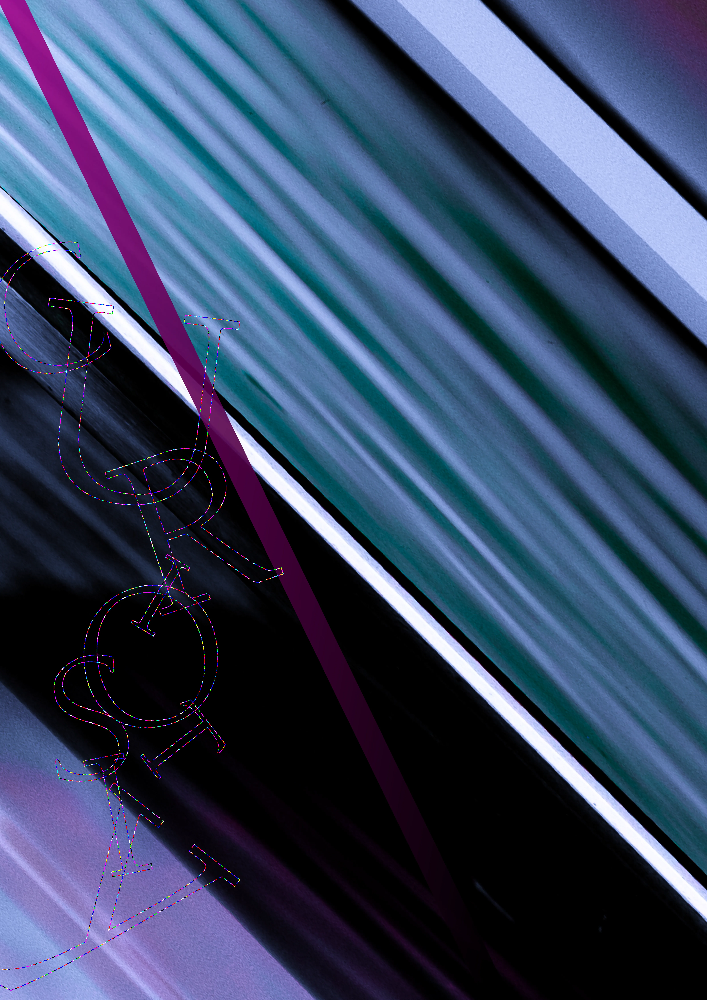
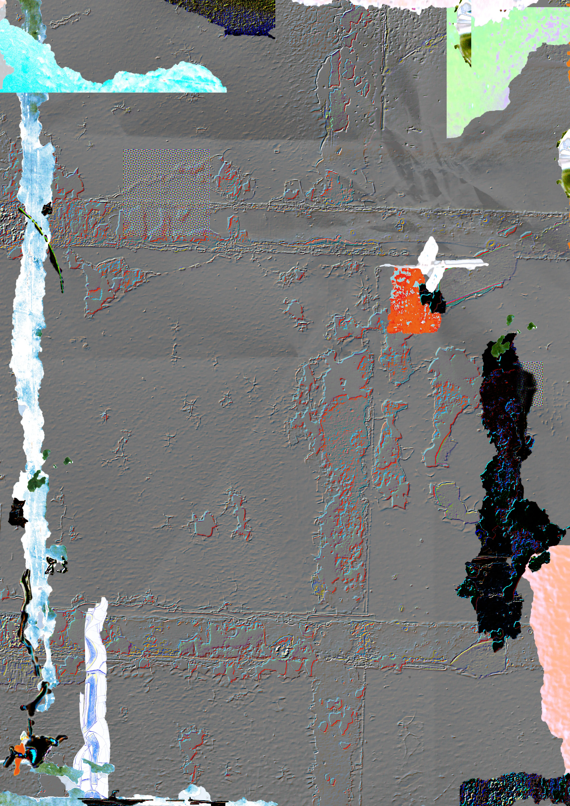
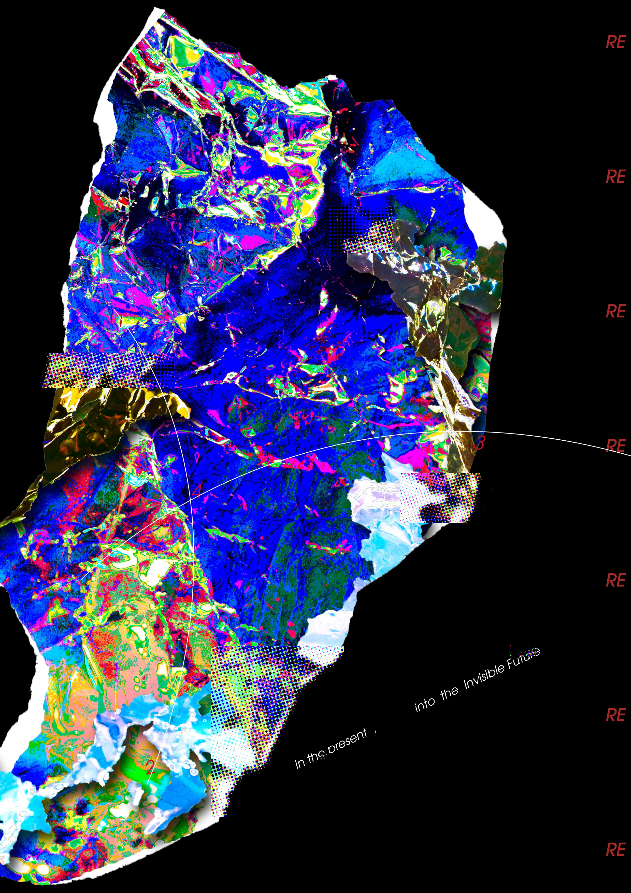
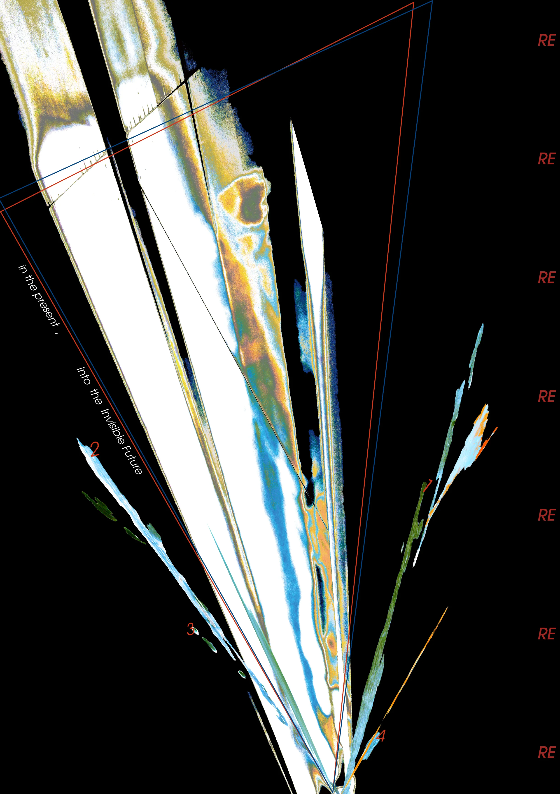

design for design







ABOUT
2025年に制作したグラフィックアート作品
CONCEPT
煌めく波模様、電柱の擦過痕、植物の繊維。
日常で発見した痕跡をカメラやハンドスキャナーを用いて採集 加工し、
ひとつのヴィジュアルに再構築した。
DATA
2025
Software : Adobe Photoshop, Adobe Illustrator
Hardware : MacBook Pro, Camera, Hand scanner